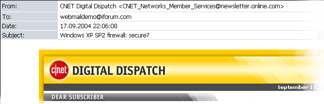

How to create my own skin
* all illustrations are for "iForum" WebMail skin of Lite version.
To create or modify WebMail skin, create new or modify existing style-sheet file "styles.css".
How skins are stored in WebMail:
Windows appearance dialog, where user can edit and view information. It's used in redirect message and login dialogs. To create new dialog in mailadm wm_mailadm_dialog (settings panels, enter to administrative section) and wm_mailadm_console_dialog (choosing the settings to change) classes are used.
Inner styles:
Class name Description Dialog window caption appearance. wm_dialog_login_header Is used in login dialog. wm_dialog_redirect_header Is used in redirect message dialog. wm_mailadm_dialog_settings_header Administrative settings panels and editing settings. wm_mailadm_dialog_header Enter the administrative section. Dialog window section where user can enter information. wm_dialog_edit Dialog window section where user can view information. wm_dialog_field Administrative settings panels. wm_dialog_login_field Login or enter to administrative section. wm_dialog_redirect_field Redirect message. wm_dialog_hide_login _field A field having a radio button element used to select the login panel. Dialog window section where the buttons are placed. wm_dialog_button_field Login and entrance to administrative section. wm_dialog_button_edit Administrative settings panels and redirect message.
Main list box where read, unread, selected and filtered messages are displayed.
Inner styles:
Class name Description Messages list header appearance. wm_list_center_header A message list header containing number of messages, checkbox element for removing all messages, message date and size, and indicating if a message has any attachments. wm_list_left_header A message list header for "From" and "Subject" fields. Message list read item appearance. wm_list_readitem Standard message list. wm_list_readitem_selected Advanced message list where user can check the state. Messages list cell appearance. wm_list_center_cell A message list cell containing number of messages, checkbox element for removing all messages, message date and size, and indicating if a message has any attachments. wm_list_left_cell A message list cells for "From" and "Subject" fields. wm_list_subject Div-element used as frame to cut a message subject along the window width. wm_attachment_gif The icon indicating if a message has any attachments. wm_list_item_link The links used to view a message.
Lower toolbar of system displayed under messages list.
Inner styles:
Class name Description Non-selected low toolbar item appearance. wm_lowtoolbar_item The number of messages in mailbox and unselected html/plain text mode of message viewing. wm_lowtoolbar_pages A link to another page having the list of messages. wm_lowtoolbar_headers A link used to display the message headers. Selected low toolbar item appearance. wm_lowtoolbar_item_selected Selected html/plain text mode of message viewing. wm_lowtoolbar_page_selected Indicates which page with list of messages is currently displayed.
Email message layout displayed in View Message or New Message mode.

Inner styles:
Class name Description wm_new_message Container used to create paragraph. Message header field captions appearance such as "From", "To", "Subject" etc. wm_view_message_data In View Message mode. wm_new_message_data In New Message mode. wm_message_value The values of mail message fields (such as "From", "To", "Subject" etc). wm_message_importance A value of "Importance" message field. wm_message_body Message body border appearance. wm_message_body_quotation Quoted strings appearance in message body. wm_message_rfc822 Appearance of message rfc822 headers. wm_file_icon An icon indicating a type of attachment file. wm_attach_data A field having the "file #...: " string when view a message. wm_new_attach_data A field having the "file #...: " string when create a message. wm_attach_value_icon A field containing the icon indicating a type of attachment file. wm_attach_value_text A field containing the information about attached file.
Top and bottom toolbar of WebMail which contains toolbar icons.Create "menu" folder in your own skin directory where functional button icons should exist.
Inner styles:
Class name Description wm_toolbar_item Toolbar item with functional buttons appearance. wm_toolbar_item_over Toolbar item with functional buttons appearance when user moves cursor over the item. wm_icon Icon positioning compared to the menu text . wm_email_space A container with string specifying mailbox usage progress. wm_email_space_indicator A container with indicator specifying mailbox usage progress. wm_space_amount A table with indicator. wm_space_used A cell indicating mailbox usage.
Icon file name Description back_to_list.gif Shows inbox with mails list. delete.gif Delete Message. forward.gif Forward Message. refresh.gif Refresh icon message_down.gif Jump to next message in mailbox. message_down_inactive.gif Inactive icon appearance when current message is last one in mailbox. message_up.gif Jump to previous message in mailbox. message_up_inactive.gif Inactive icon appearance when current message listed is the first in mailbox. new_mail.gif Create New Message. print.gif Print Message. redirect.gif Redirect Message. reply.gif Reply to the Message. save.gif Save Message. send.gif Send Message icon.
Upper navigation panel.
Inner styles:
Class name Description wm_accountslist_item_link A link to the list of messages and to exit of mailbox. wm_accountslist_item Container for link to exit from mailbox. wm_accountslist_item_selected Container for link to list of messages.
Class name Description wm_body A style of background used for print preview or inline attachment preview. wm_reg All WebMail links. wm_print A table used to prepare a message for print. wm_print_content A cell of a table used to prepare a message for print. wm_logo Container with logo.
Class name Description body Defines WebMail's background color or image. label Defines the hand-pointer for label elements, because they are related to checkbox or radiobutton. img Specifies if all images should not have any borders. td Specifies if all table cells should not have paragraphs.
If you have any questions don't hesitate to email to support@afterlogic.com
Or visit our support web page at http://www.afterlogic.com/support
or web forum at http://www.afterlogic.com/forum